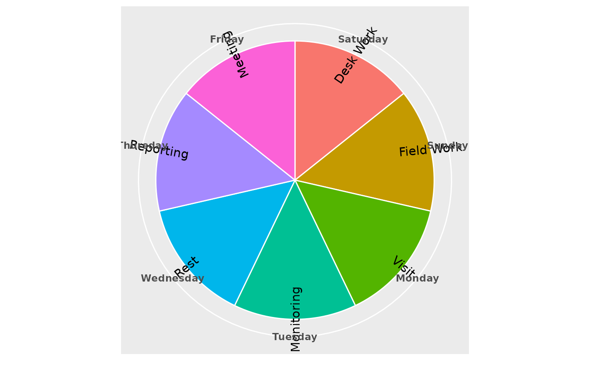

This function plots works corresponding to each day of the week.
Arguments
- wtask
A factor variable having values on each day of the week.
Value
A ggplot object, which can be further modified
with ggplot2 functions and themes.
Examples
set.seed(10)
wtask <- c(
"Desk Work", "Field Work", "Visit", "Monitoring",
"Rest", "Reporting", "Meeting"
)
plan_week(wtask)
